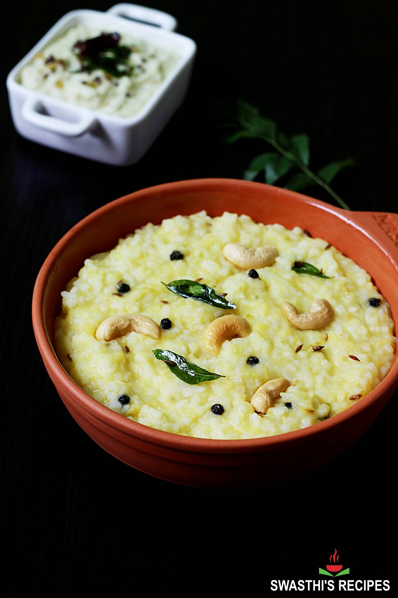
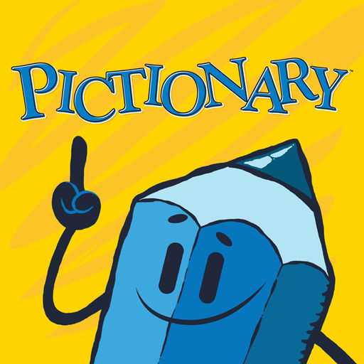

Lab 4 - Pseudocoding and Problem-solving
Challenge
Learning to think in terms of pseudocoding before coding.
Problems
I wanted to change a lot of the CSS in this part but I found that a little time consuming
Since they were really specific problems I not only tried to watch tutorials on youtube but I also used chatgpt for help.
Reflection
I probably worked for about 6 hours on this assignment trying to figure out what mistakes I made. What was hard about this is that I didn't know why the CSS was affecting my html I also definetly needed the help of Chatgpt to figure our why parts of my final website wasn't working. I also figured out how to link back to my hompage. I could have started earlier, I just had a lot of work ramping up this week
I had the help of AI to code the css component.
Results
Task 1: Pseudocode an everyday task
Task: How to Make Pongal
How to make pongal (A south Indian dish from my home) 1. Prepare the Ingredients - Ingredients include: * 1 cup rice of your choice * ½ cup of moong dal (yellow split mung beans) * 1 tsp cumin seeds * 1 tsp black pepper (whole or crushed) * 2 tbsp Ghee * 1-inch ginger (chopped finely) * A sprig of curry leaves * 10-12 whole cashews * 4 cups of water * Salt to your taste * ¼ tsp of asafoetida or hing powder 2. Roast moong dal - Dry roast moong dal until it gives a nutty aroma - Do not let it burn (no turning brown) 3. Rinse rice and dal - Rinse rice and the roasted moong dal about 2-3 times - Drain the water 4. Cook Rice and Dal - In a pressure cooker or pot: * Add rinsed Rice and Dal * Add 4 cups of water * Add salt * Pressure cook for 4-5 whistles OR cook in pot until soft and mushy * Mash lightly after cooking 5. Prepare seasoning (Indian Tadka) - Heat Ghee in a small pan - Add: * Cashews: fry until golden brown * Cumin seeds: let them splutter * Crushed black pepper * Ginger * Curry leaves * Asafoetida 6. Combine - Pour the hot seasoning over the cooked rice-dal mixture - Mix well - Adjust salt if needed - Add more ghee for more flavor 7. Serve - Serve hot with other condiments (like chutney or sambar) - Optional: Serve on top of a Banana leaf
Task 2: Pseudocode for a Simple Computer Game
Game: Pictionary
Task: Build a digital version of Pictionary where players draw and guess words. 1. Start a Game - Start up game screen - Project Title and Instructions of the game - Wait for players to join or start 2. Set Up the Game - Gather a certain number of players (your choice) - Assign names to each of the players - Determine the drawing order in a randomized fashion to pick a drawer 3. Start a Game Loop - Repeat until the winning condition is met: - Select a word for the drawer randomly - The word should be hidden from the guessers 4. Drawing Time - Display a drawing canvas to the drawer - Enable basic drawing tools (pen,erase,clear,color) - Start a timer to make the game more challenging 5. Guessing Time (runs during drawing time) - Guessers can guess through chat or text box - System checks if each guess matches the word - If a guesser guesses correctly: - End round - Distribute points to guesser and drawer 6. End of Round (once everyone guesses) - Show correct word (if no one guesses) - Update the scoreboard - Move to next player in the correct turn order 7. End Game - After a set number of rounds: (3) - Display final scores - Announce the winner - Offer option to play again or exit
/**
* Pictionary.
*
* People try to guess what a person intending to draw.
*
* @author Devika Subramaniam.
* @since 04.21.2025
*/
// 1. Start a Game
// Start up game screen
// Project Title and Instructions of the game
// Wait for players to join or start
// 2. Set Up the Game
// Gather a certain number of players (your choice)
// Assign names to each of the players
// Determine the drawing order in a randomized fashion to pick a drawer
// 3. Start a Game Loop
// Repeat until the winning condition is met:
// Select a word for the drawer randomly
// The word should be hidden from the guessers
// 4. Drawing Time
// Display a drawing canvas to the drawer
// Enable basic drawing tools (pen, erase, clear, color)
// Start a timer to make the game more challenging
// 5. Guessing Time (runs during drawing time)
// Guessers can guess through chat or text box
// System checks if each guess matches the word
// If a guesser guesses correctly:
// End round
// Distribute points to guesser and drawer
// 6. End of Round (once everyone guesses)
// Show correct word (if no one guesses)
// Update the scoreboard
// Move to next player in the correct turn order
// 7. End Game
// After a set number of rounds (e.g., 3):
// Display final scores
// Announce the winner
// Offer option to play again or exit
/**
* Pongal Recipe.
*
* Initiating a cultural food made for festivals using code
*
* @author Devika Subramaniam.
* @since 04.21.2025
*/
// 1. Prepare the Ingredients
// Ingredients include:
// 1 cup rice of your choice
// ½ cup of moong dal (yellow split mung beans)
// 1 tsp cumin seeds
// 1 tsp black pepper (whole or crushed)
// 2 tbsp Ghee
// 1-inch ginger (chopped finely)
// A sprig of curry leaves
// 10-12 whole cashews
// 4 cups of water
// Salt to your taste
// ¼ tsp of asafoetida or hing powder
// 2. Roast moong dal
// Dry roast moong dal until it gives a nutty aroma
// Do not let it burn (no turning brown)
// 3. Rinse rice and dal
// Rinse rice and the roasted moong dal about 2-3 times
// Drain the water
// 4. Cook Rice and Dal
// In a pressure cooker or pot:
// Add rinsed Rice and Dal
// Add 4 cups of water
// Add salt
// Pressure cook for 4-5 whistles OR cook in pot until soft and mushy
// Mash lightly after cooking
// 5. Prepare seasoning (Indian Tadka)
// Heat Ghee in a small pan
// Add:
// Cashews: fry until golden brown
// Cumin seeds: let them splutter
// Crushed black pepper
// Ginger
// Curry leaves
// Asafoetida
// 6. Combine
// Pour the hot seasoning over the cooked rice-dal mixture
// Mix well
// Adjust salt if needed
// Add more ghee for more flavor
// 7. Serve
// Serve hot with other condiments (like chutney or sambar)
// Optional: Serve on top of a Banana leaf